Betül Apari
UX/UI designer focused on accessible, human-centered interfaces.
UX/UI designer focused on accessible, human-centered interfaces
I am a Multimedia Communication & Documentation student at the University of Applied Sciences Aschaffenburg, driven by the goal of making technology feel more human.
How I work
- User-centric design
- Structured thinking
- Functional interfaces
Languages
- German (native)
- English (professional)
- Turkish (fluent)
Tools
- Figma
- Adobe Illustrator, Photoshop, InDesign
- Autodesk Inventor, Autodesk Revit
Education
- B.Sc. Multimedia Communication & Documentation, TH Aschaffenburg
[TODO: CV download – put your CV as cv.pdf next to index.html and replace this note with a link.]
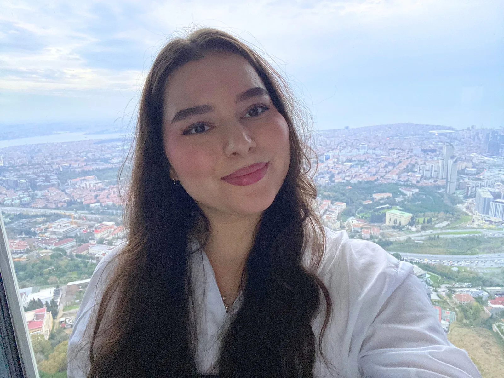
Selected work
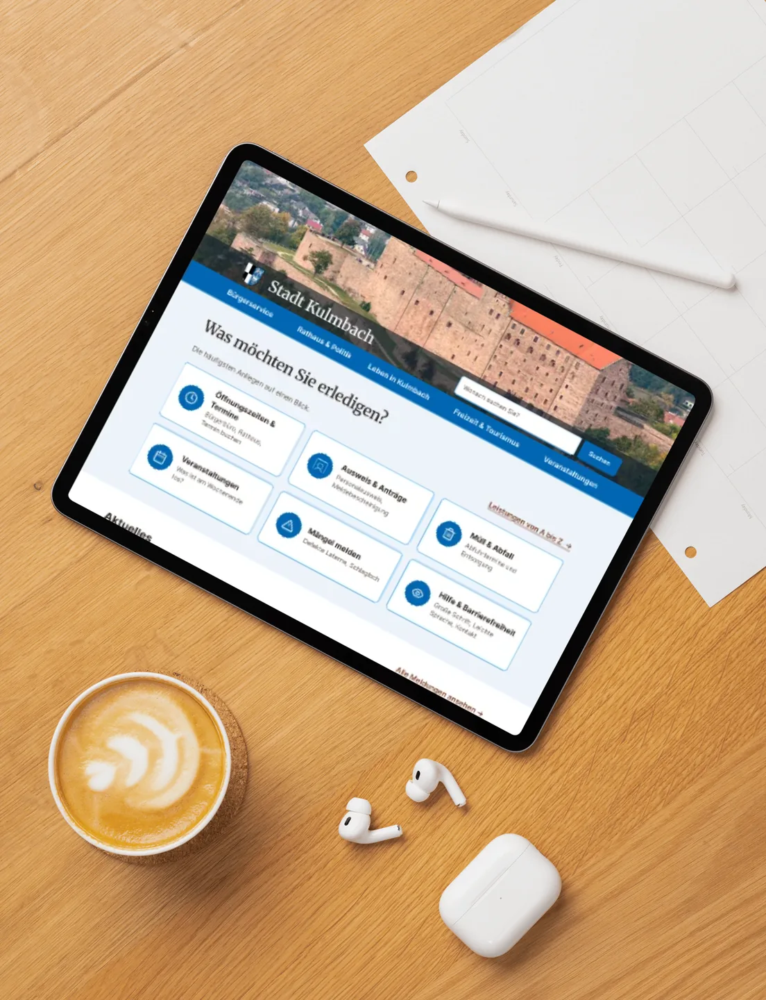
kulmbach.de redesign
A city website reorganised around how people look for things, not how the city office works.
View case study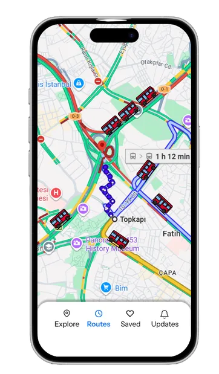
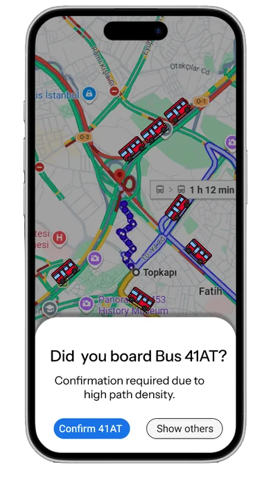
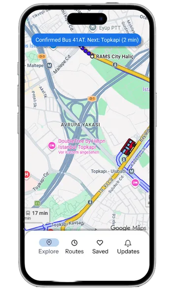
Google Maps Transit
A one-tap check that keeps your bus line locked in when you switch apps.
View case study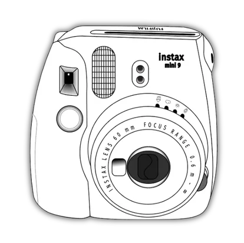
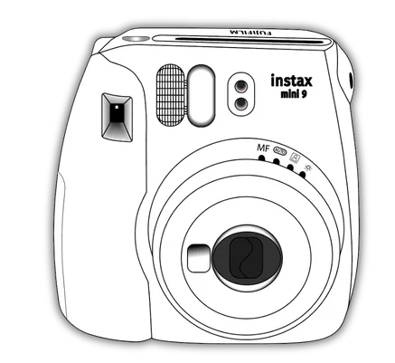
Instax mini 9
Three changes to an analog camera so that less film gets wasted.
View case study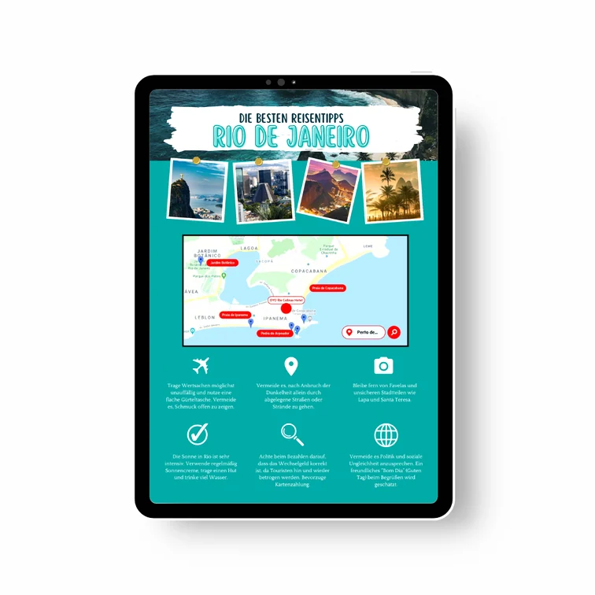
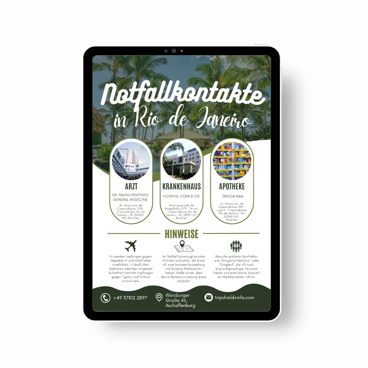
Tripshield
A safety companion for solo travellers with verified local information.
View case study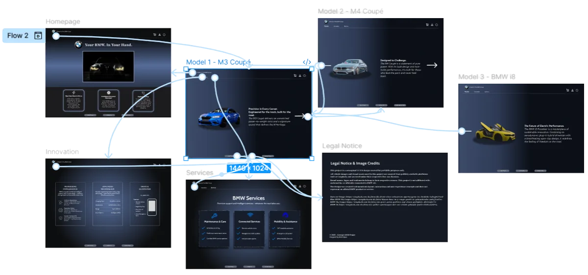
BMW Project
Future interaction patterns for an automotive interface.
View case study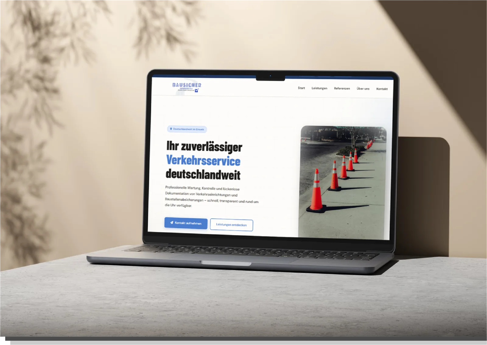
Bausicher Verkehrsservice
A fast, mobile-first web presence for a traffic safety service.
View case study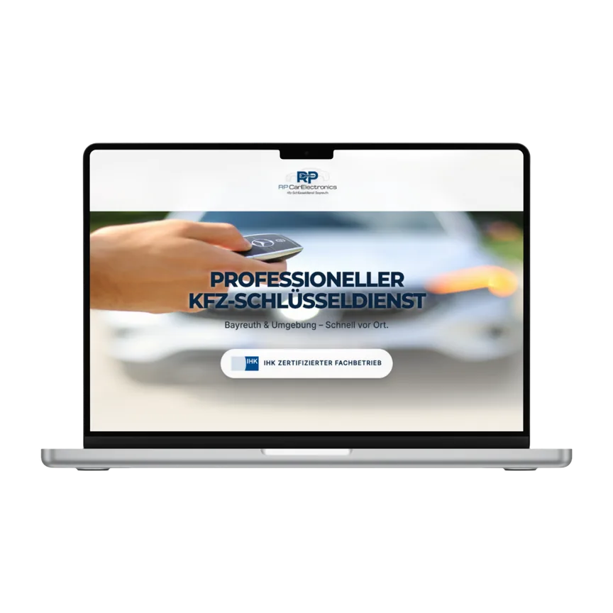
RP CarElectronics
A website for an auto-electronics and locksmith service in Bayreuth.
View case study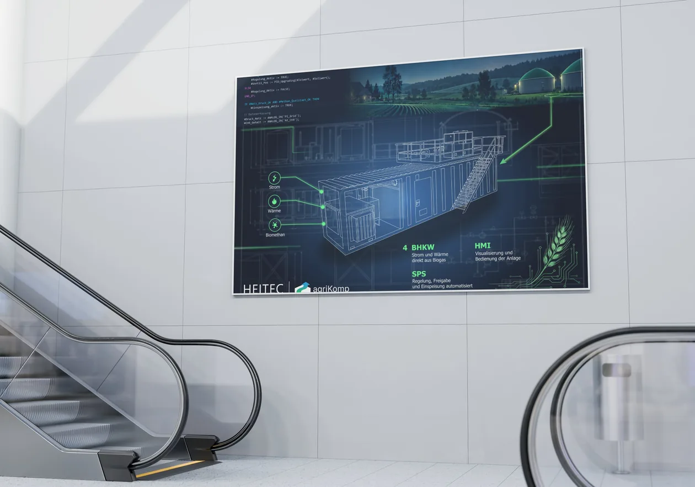
HEITEC AG
Print and visual material that explains complex machines to customers.
View case study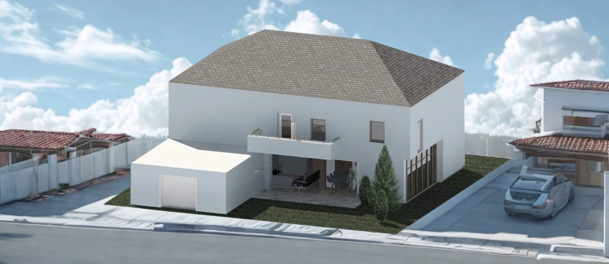
Villa Lumina
Human-centered design principles applied to a physical living space.
View case studyLet’s create something meaningful together.
I’m looking for opportunities in UX design where I can work on inclusive, accessible interfaces.
- Location
- Based in Bavaria
Bachelor thesis: kulmbach.de redesign
The Kulmbach city website was hard to use. Information was sorted the way the city office works, not the way people think.
- Type
- Bachelor thesis
- Focus
- Human-centered UX
- Tool
- Figma
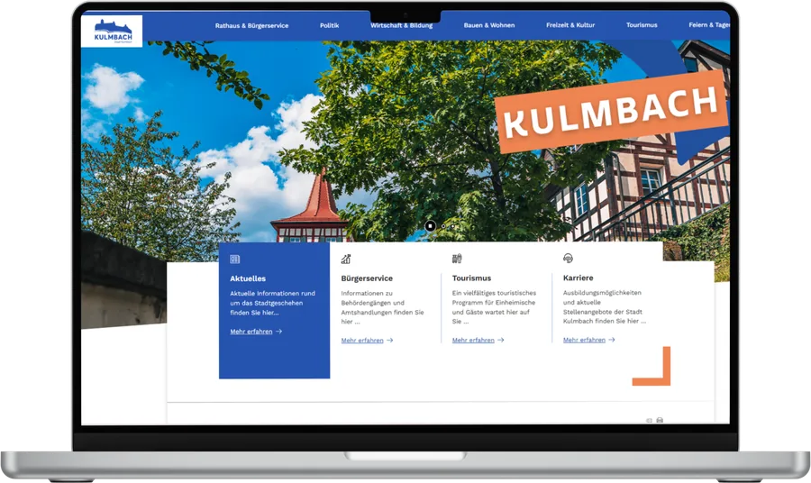
The problem
In my tests, users could only find things that were on the homepage. Everything else, they couldn’t find at all. The search bar didn’t work.
My process
- Heuristic evaluation (Nielsen)
- Think-aloud usability tests with 6 participants and SUS
- New information architecture from 17 requirements
- Accessible Figma prototype, 1,600+ texts contrast-checked
[TODO: Add process artefacts here – e.g. a photo from the usability tests, the requirements list or the new sitemap.]
Result
44.2 to re-test in progress
[TODO: Replace “re-test in progress” with the SUS score after the redesign once the re-test is done.]
Google Maps Transit: UX improvement
A one-tap confirmation that “locks in” the transit session, so the app still knows your bus after you switch to another app.
- Type
- App UX improvement, concept
- Tool
- Figma
The origin
While living in Istanbul for a year, I experienced firsthand how overwhelming public transit can be. In high-density hubs, where dozens of bus lines share the same route, even the best apps struggle to keep up. I noticed that once you board, the app often loses context if you switch to other tasks on your phone.
The problem
Users often feel uncertain whether the app has correctly identified their specific bus line. A major pain point is “context loss”: leaving the app often resets the journey, forcing users to manually re-select their route.
The solution: 1-tap verification
I designed a simple confirmation prompt that “locks in” the transit session. By verifying the bus line once, Google Maps remembers the specific vehicle even if you switch apps, ensuring reliable guidance throughout the entire journey.
Learnings
[TODO: Add what you learned or how you tested the idea. Not in the PDF yet.]
Instax mini 9: redesign case study
The Instax mini 9 is a beloved analog camera, but it has some UX flaws that often lead to wasted film.
- Type
- Product redesign case study
- Research
- Usability tests with 3 participants
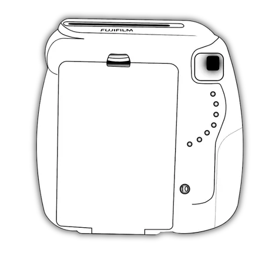
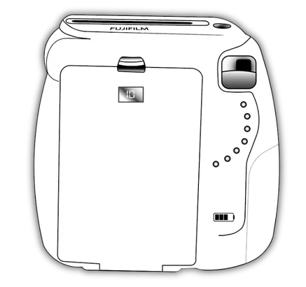
The challenge
Based on usability tests with 3 participants, I identified key pain points: an inaccurate analog counter and a flash that triggers even when it’s not wanted.
The research
Users frequently complained that they never knew how many photos were left. This feedback became the foundation for my design decisions.
The solution
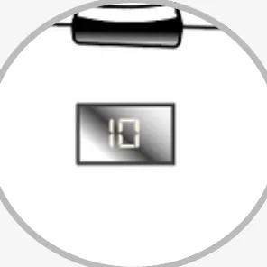
Digital frame counter
Replaces the inaccurate analog counter.
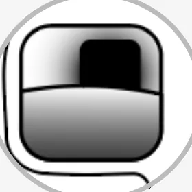
Viewfinder cover
Protects the viewfinder from dust.
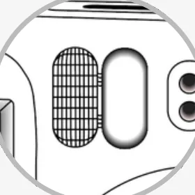
Flash control
Lets users turn the flash on or off to avoid overexposed photos.
Learnings
[TODO: Add a result or learning – e.g. feedback on the redesigned camera. Not in the PDF yet.]
Tripshield: safety concept for solo travellers
A digital companion that gives instant access to verified safety information and emergency support.
- Type
- App concept, team project
- Tool
- Figma
The vision
As a solo traveller myself, I know the feeling of uncertainty in a new city. With Tripshield, our team’s goal was to create a digital companion that provides instant access to verified safety info and emergency support, designed in Figma.
The problem
- Safety concerns at night and in new places
- An information gap: no verified contacts
- A need for real-time, reliable help
Understanding the user
Our persona: Anna Berger, 26, a frequent solo traveller who worries about safety and reliable information.
The strategy: empathy-driven design
We started by understanding our user Anna. We focused on a stress-free UX, featuring a 1-tap SOS navigation and real-time safety alerts that keep users informed without overwhelming them.
Learnings
[TODO: Add your role in the team and a result or learning. Not in the PDF yet.]
BMW Project: future automotive UI
A concept project from my semester abroad that explores future interaction patterns for automotive interfaces.
- Type
- Concept project, semester abroad
- Tool
- Figma
The goal
My goal was to create a seamless connection between the driver and the vehicle’s digital ecosystem, designed in Figma.
The concept: Your BMW. In your hand.
I focused on a minimalist, high-contrast UI. The interface prioritises essential data, from vehicle innovation to personalised services, and reduces cognitive load through a dark-themed, futuristic aesthetic.
Key highlights
- I built a fully functional prototype in Figma to test user flows and transitions between different vehicle models.
- An “Innovation” and “Services” structure keeps complex information organised and accessible.
- A consistent design language reflects the premium identity of the BMW brand.
Learnings
[TODO: Add what you learned from the project. Not in the PDF yet.]
Bausicher Verkehrsservice: branding and landing page
A high-speed, mobile-first web presence for a specialised traffic safety service.
- Type
- Client work: branding and landing page
- Built with
- Tailwind CSS
The mission
I was commissioned to build a high-speed, mobile-first web presence for a specialised traffic safety service. The goal was a professional digital home that builds instant trust with B2B clients while ensuring high accessibility for emergency requests.
The strategy
Since the target audience often needs help in high-stress situations, like securing construction sites, I focused on a clear, functional UI with a near-instant load time. I handled the entire deployment cycle.
Key highlights
- Optimised for near-instant load times using Core Web Vitals
- Fully responsive layout built with Tailwind CSS
- 100% GDPR-compliant and cookie-banner-free
RP CarElectronics: brand and landing page
A reliable digital point of contact for people in emergency situations, for an auto-electronics and locksmith service in Bayreuth.
- Type
- Client work: brand and landing page
- Built with
- VS Code, Tailwind CSS, GitHub, IONOS
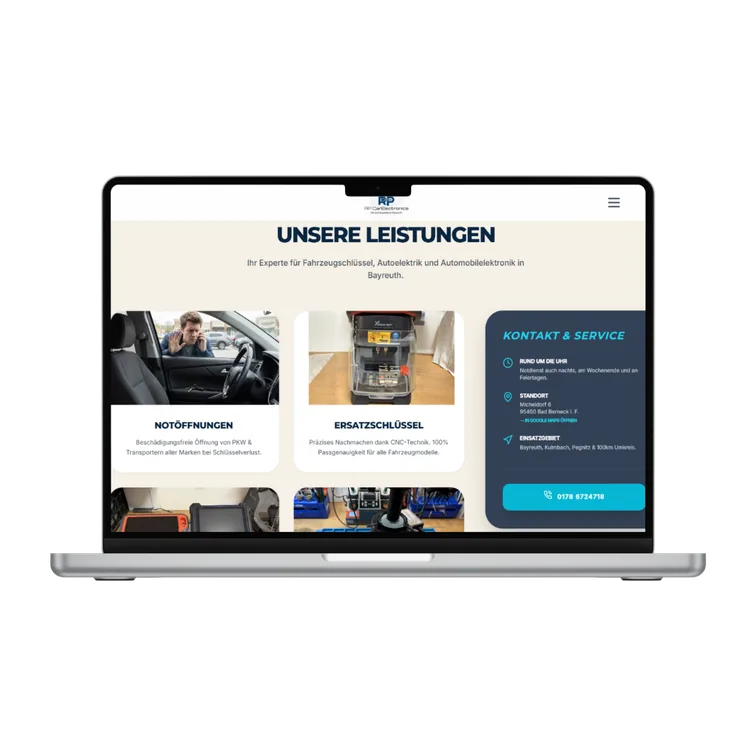
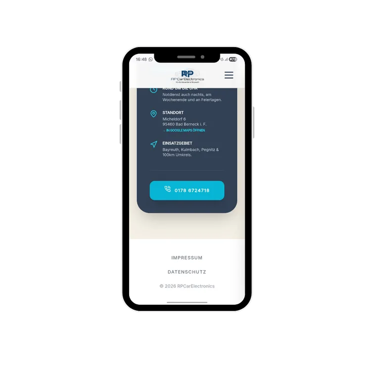
The mission
I was commissioned to build a professional, high-performance website for a specialised auto-electronics and locksmith service in Bayreuth. The goal was to create a reliable digital point of contact for users in emergency situations.
Technical execution
I coded the website in VS Code and implemented a Tailwind CSS architecture that ensures 100% mobile responsiveness. I personally handled the version control via GitHub and the final deployment through IONOS.
Learnings
[TODO: Add a result or learning – e.g. client feedback or what you would do differently. Not in the PDF yet.]
Internship at HEITEC AG
At HEITEC, I worked as a graphic designer, creating print and visual material for the automation department.
- Type
- Internship, visual communication
- Period
- Oct 2026 – Feb 2027
- Tools
- Photoshop, Illustrator
The job
A big part of the job is understanding complex machines well enough to explain them visually to customers.
My tasks
- Designing posters for customer projects
- Creating a flyer for HEITEC’s retrofit services
- Image editing and compositing in Photoshop and Illustrator
- Working through technical documentation and checking facts with the engineers
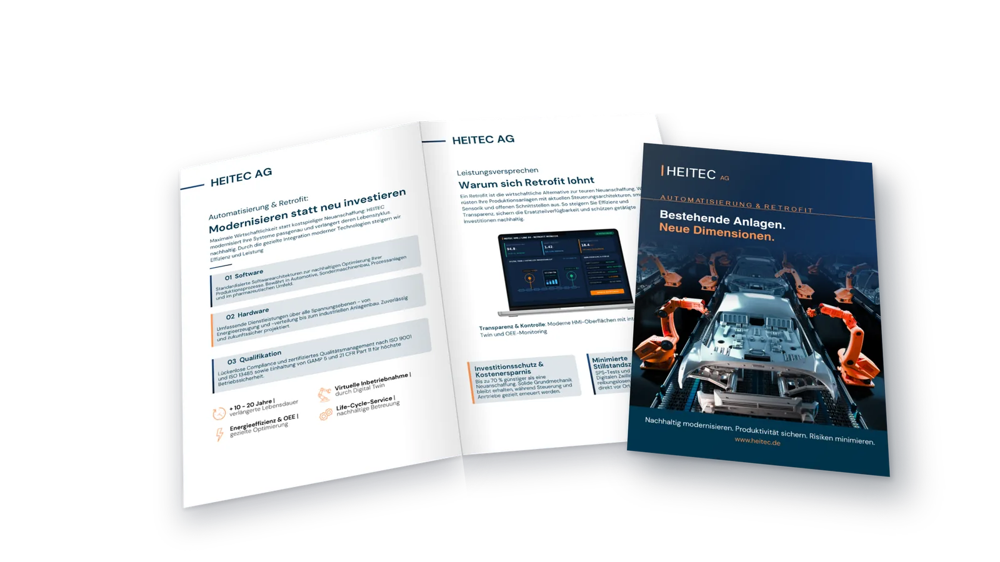
What I learned
How to turn technical content into something people outside the field understand at first glance. I also learned how to work with real feedback loops: drafts, corrections from the team, and adjusting until it fits.
Villa Lumina: architectural UX design
A villa that isn’t just aesthetic, but fully optimised for the people living in it.
- Type
- Architectural UX design
- Tool
- Autodesk Revit
The concept
For this project, I applied human-centered design principles to a physical living space using Autodesk Revit.
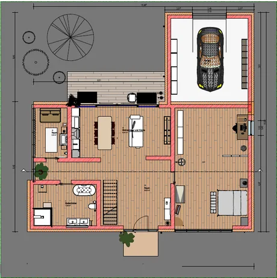
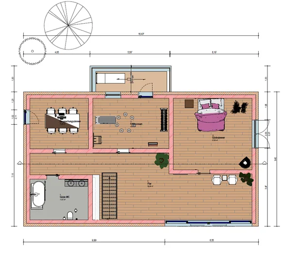
UX in architecture
I focused heavily on inclusive design. The kitchen was planned with ergonomic solutions, like placing the oven at elbow level to prevent back strain. I also designed a dedicated “Quiet Room”. This space is specifically intended for nursing mothers or praying guests. The rooms were carefully chosen to fit the target group.
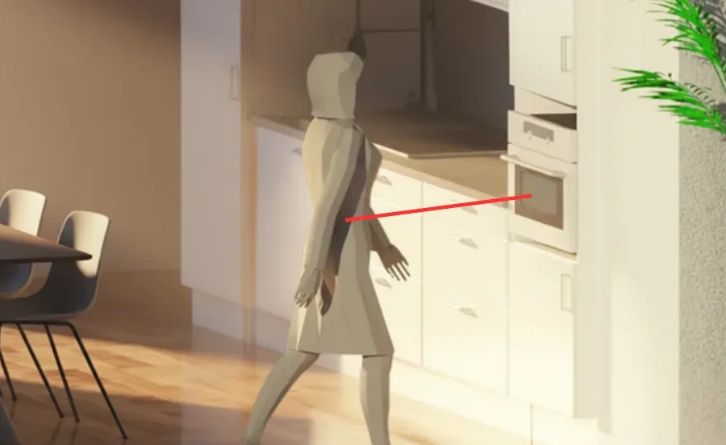
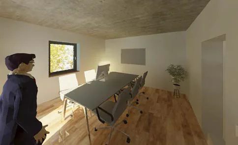
Learnings
[TODO: Add the target group and what you learned from applying UX methods to architecture. Not in the PDF yet.]